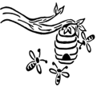

Holzis Honey ist unsere kleine Imkerei mit Leidenschaft für Bienen, Natur und ehrlichen Honig.
Holzis Honey – das sind Clemens und Marcus Holzreiter.
Gemeinsam betreiben wir unsere kleine Imkerei in Nordenham und der umliegenden Region. Was als Interesse an der faszinierenden Welt der Bienen begann, entwickelte sich schnell zu einer Leidenschaft, die wir heute gemeinsam leben.
Besonders schön ist für uns, dass die Imkerei Generationen verbindet: Vater und Sohn arbeiten Hand in Hand und kümmern sich mit viel Engagement um unsere Bienenvölker. Dabei stehen das Wohl der Bienen, ein respektvoller Umgang mit der Natur und die Herstellung von hochwertigem, regionalem Honig für uns an erster Stelle.
Unsere Bienen sammeln Nektar und Pollen in Nordenham und Umgebung. Aus dieser Vielfalt der Natur entsteht ein naturbelassener Honig mit seinem ganz eigenen Charakter – abhängig von Blütezeit, Wetter und Jahreszeit.
Mit Holzis Honey möchten wir nicht nur Honig anbieten, sondern auch die Begeisterung für Bienen und ihre wichtige Rolle in unserer Umwelt weitergeben.